Overview
In this project, you design power converter circuits and their control systems using Simscape. The project includes workflows for designing LLC resonant converters, bi-directional CLLC resonant converters, dual active bridge converters, totem-pole, boost, and interleaved boost PFC converters, non-isolated buck, boost, and buck-boost converters, and grid-forming converter controllers. Use these workflows to estimate resonant tank parameters, size the power stage, select converter components, tune compensator controllers, measure input current harmonics, and design grid-forming inverter control strategies.
Get Started
Double-click the PowerConverterCircuitAndControlDesignWithSimscape PRJ file (in the root folder) to set up the project and get started.
Workflow
Click the links to open the application workflows or Live Scripts.
Grid-Forming Converter
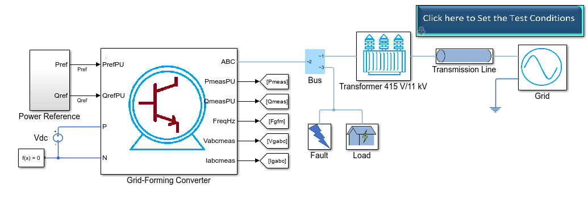
Grid-Forming Converter Design
To design and simulate a grid-forming converter for various grid conditions to meet GC0137 grid standard.
LLC Converter
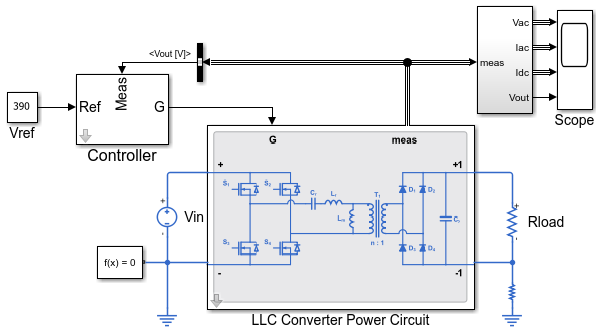
Design of LLC Resonant Converter
To design a full-bridge LLC resonant converter and simulate its operation under various load conditions.
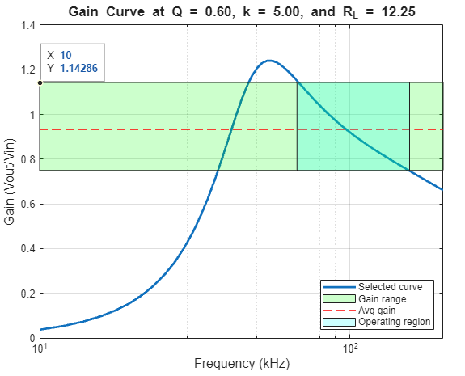
Estimate LLC Resonant Tank Parameters
To estimate the resonant tank parameters (Lr, Cr, Lm) for an LLC converter based on gain and load requirements.
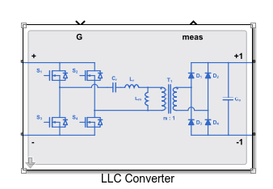
Select LLC Converter Components
To select the primary MOSFETs and secondary diodes of the LLC converter, and to apply catalog parts that meet the required ratings.
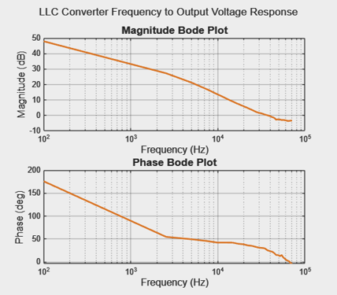
Design LLC Converter Controller
To review the controller options of the LLC converter, estimate the plant frequency response, and tune the output voltage regulation loop.
Bi-Directional CLLC Converter
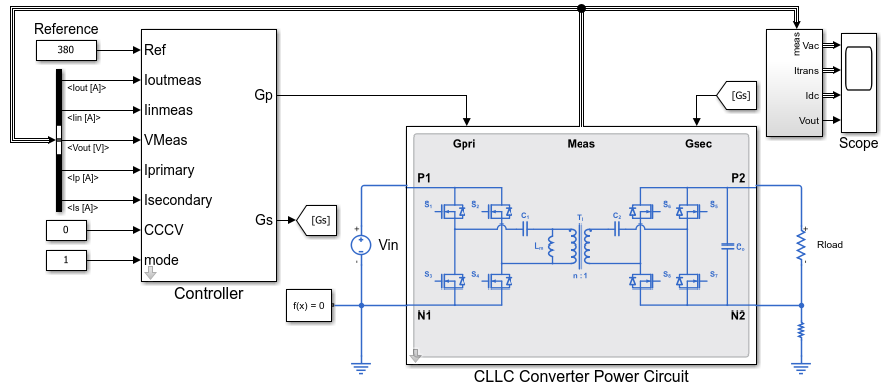
Design of Bi-Directional CLLC Resonant Converter
To design a bi-directional full-bridge CLLC resonant converter and simulate its operation in both forward and reverse power flow.
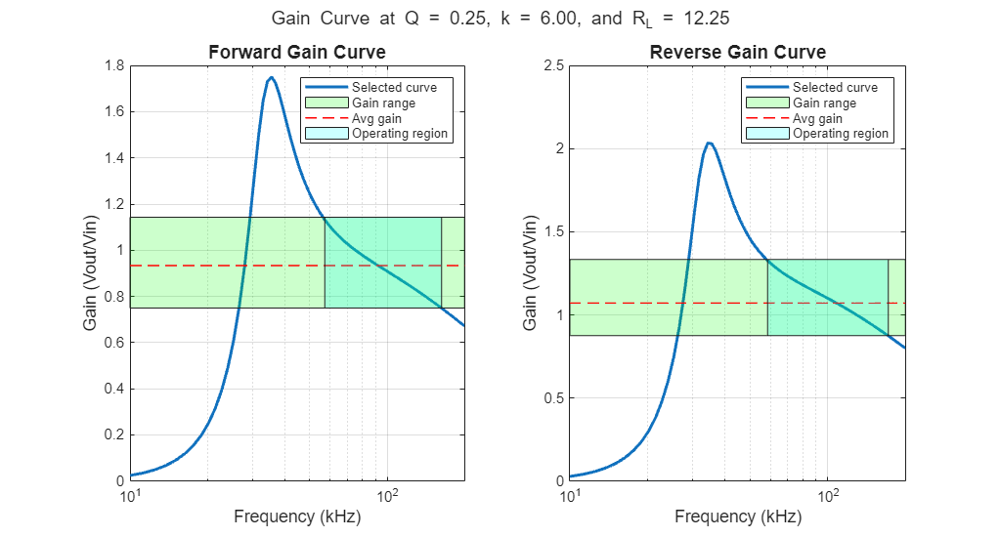
Estimate CLLC Resonant Tank Parameters
To estimate the resonant tank parameters (Lr, C1, C2, Lm) so that the forward and reverse gain curves both cover the required operating range.
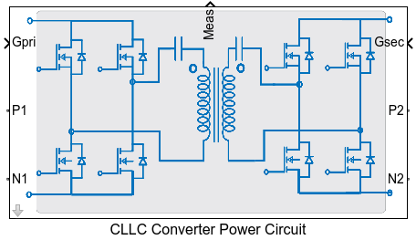
Select CLLC Converter Components
To select the primary and secondary bridge MOSFETs of the CLLC converter, and to apply catalog parts that meet the required ratings.
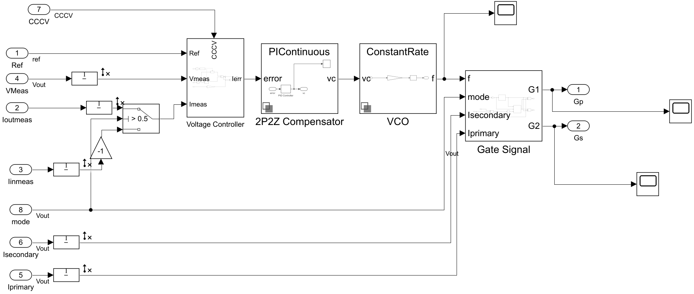
Design CLLC Converter Controller
To review the controller options of the CLLC converter, estimate the plant frequency response, and tune the output voltage regulation loop.
Dual Active Bridge Converter
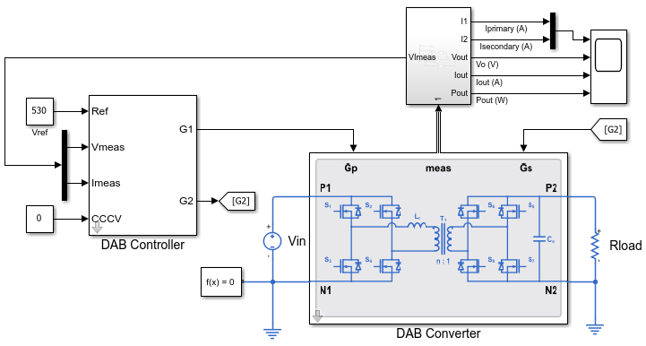
Design and Analyze a DAB Converter
To design and simulate an isolated bidirectional dual active bridge DC-DC converter with single-phase-shift control, and to estimate its IV curves, power loss, and efficiency.
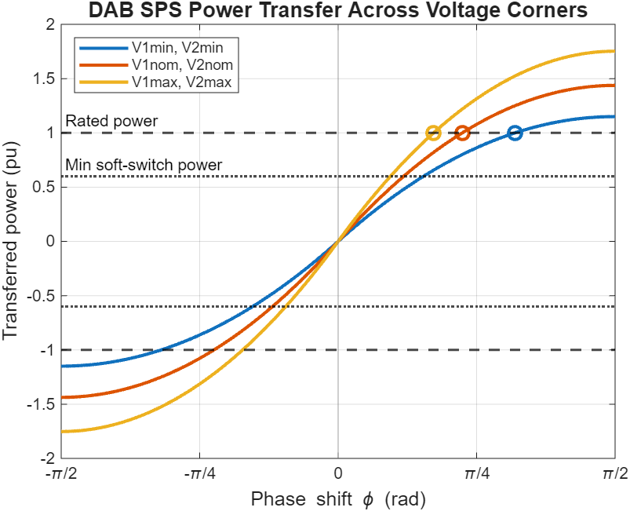
Estimate DAB Converter Parameters
To size the DAB power stage (turns ratio, series inductance, magnetizing inductance, dead time), and to verify soft switching across the operating envelope.
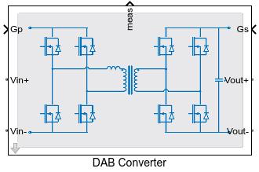
Select DAB Converter Components
To select the primary and secondary bridge MOSFETs of the DAB converter, and to apply catalog parts that meet the required ratings.
DAB Thermal Analysis
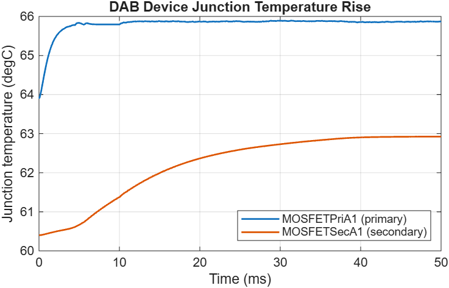
DAB Temperature Rise Simulation
To simulate the junction temperature of every bridge device of a DAB converter that uses the custom MOSFET model, and to estimate the device loss and the efficiency.
Totem-Pole Boost PFC
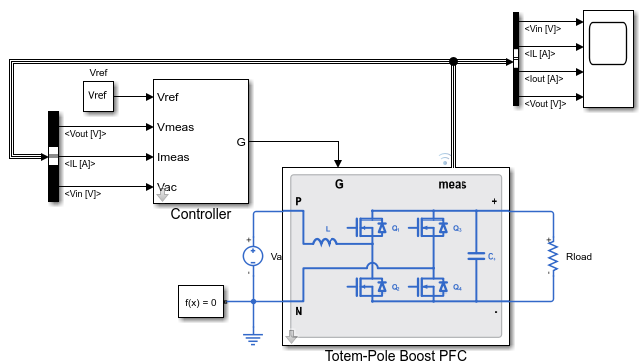
Design and Analyze a Totem-Pole Boost PFC Converter
To design and simulate a bridgeless totem-pole boost power factor correction converter with cascaded voltage and current control, and to estimate its input current harmonics, THD, power loss, and efficiency.
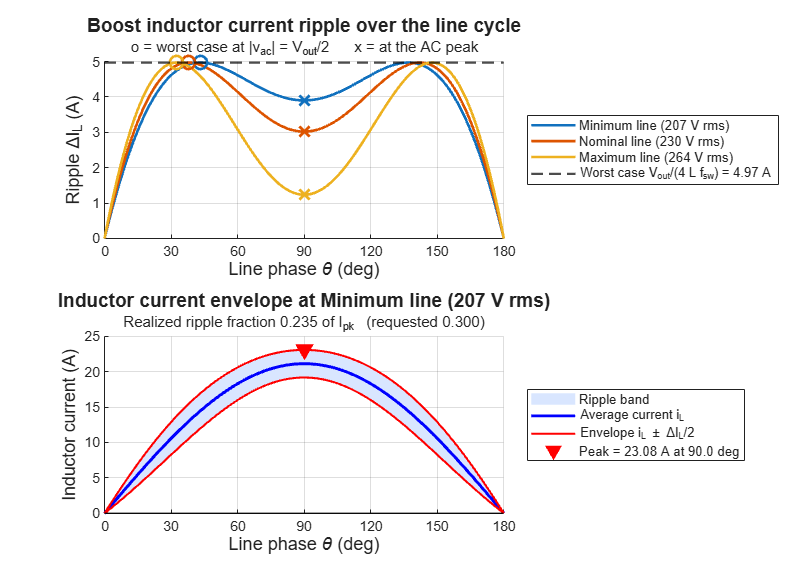
Estimate Totem-Pole Boost PFC Parameters
To size the boost inductor and the output capacitor from the allowed current ripple and the output hold-up requirement, and to verify the peak current and continuous conduction across the input voltage range.
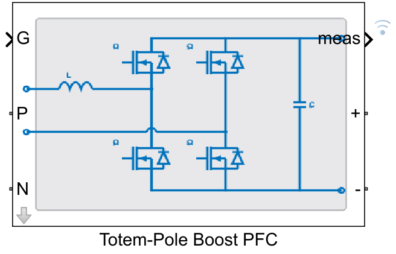
Select Totem-Pole Boost PFC Components
To select the fast-leg and slow-leg devices of the totem-pole boost PFC converter, and to apply catalog parts that meet the required ratings.
Boost PFC
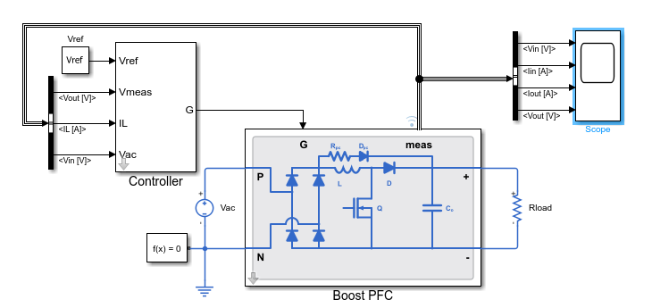
Design and Analyze a Boost PFC Converter
To design and simulate a single-phase boost power factor correction converter with average-current-mode control, and to estimate its input current harmonics, THD, power loss, and efficiency.
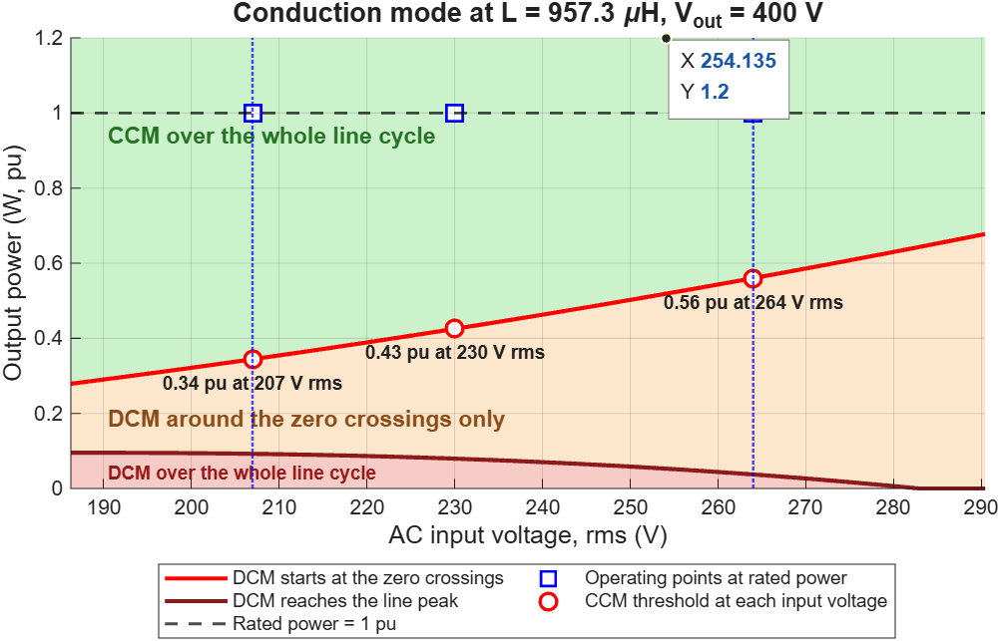
Estimate Boost PFC Parameters
To size the boost inductor and the DC-bus capacitor from the allowed current ripple and the output hold-up requirement, and to verify the peak inductor current and continuous conduction across the input voltage range.
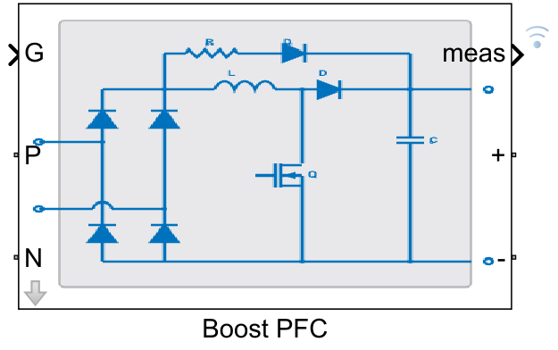
Select Boost PFC Components
To select the boost-leg and rectifier-bridge devices of the boost PFC converter, and to apply catalog parts that meet the required ratings.
Interleaved Boost PFC
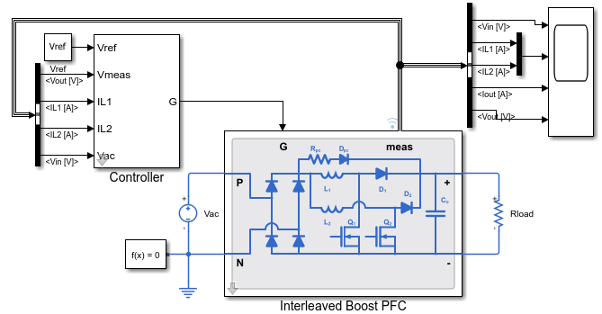
Design and Analyze an Interleaved Boost PFC Converter
To design and simulate a two-leg interleaved boost power factor correction converter with phase-shifted carriers and leg-current balancing, and to estimate its input current harmonics, THD, power loss, and efficiency.
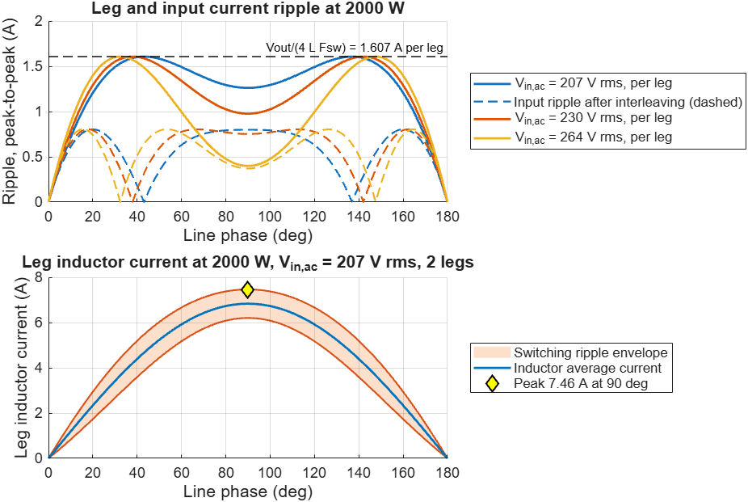
Estimate Interleaved Boost PFC Parameters
To size the per-leg boost inductors and the DC-bus capacitor, and to verify how interleaving cancels the input current ripple across the input voltage range.
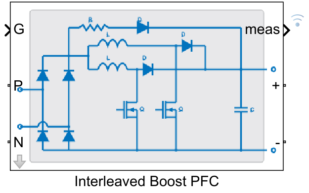
Select Interleaved Boost PFC Components
To select the per-leg boost devices and the shared rectifier bridge, and to apply catalog parts that meet the required ratings.
Non-Isolated DC-DC
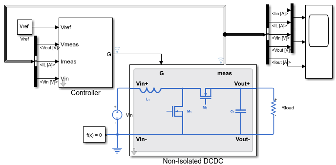
Design and Analyze a Non-Isolated DC-DC Converter
To design and simulate a synchronous boost converter with a cascaded voltage and current controller, and to estimate its IV characteristics, power loss, and efficiency across the input voltage range.
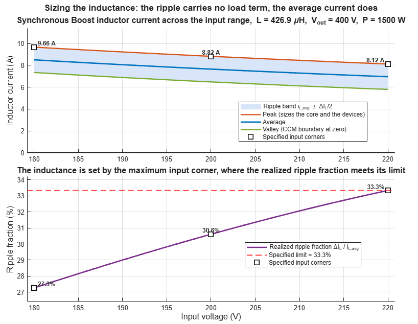
Estimate Non-Isolated DC-DC Parameters
To size the inductor and the output capacitor for any of the six buck, boost, and buck-boost topologies, and to check the continuous-conduction boundary across the input voltage range.
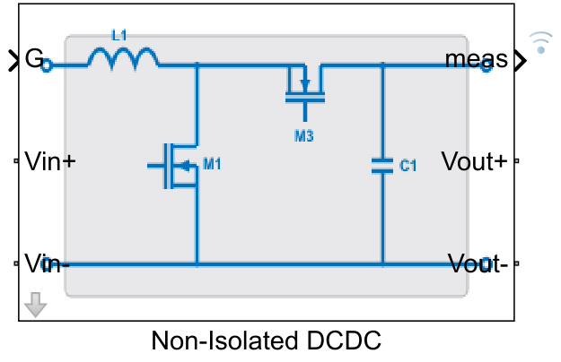
Select Non-Isolated DC-DC Components
To select the switch and freewheeling diode devices for the specified topology, and to apply catalog parts that meet the required ratings.
Components
This project uses blocks from Simscape™ and Simscape Electrical™, and adds custom
blocks for converter power stages, controllers and semiconductor devices. Each custom block,
its documentation and its test harness are in the Components folder. The library
ConverterLibrary, Components/ConverterLibrary.slx, holds every block listed
below.
To view the full component list with documentation and test harness links, see Component Documentation.
Power Converter Plant
Non-Isolated DC-DC Converters
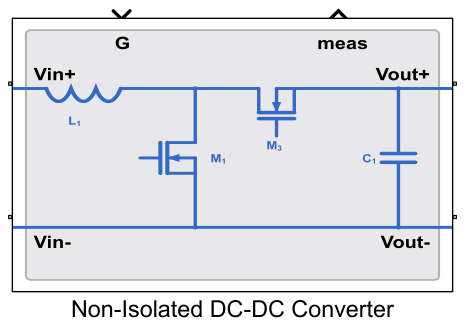
Non-Isolated DC-DC Converter
Buck, boost or buck-boost power stage, with optional synchronous rectification.
Power Factor Correction Converters
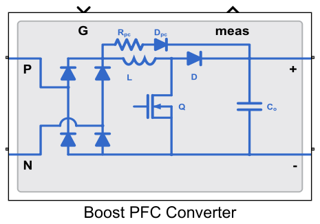
Boost PFC Converter
Single-phase diode bridge and single-leg boost power stage.
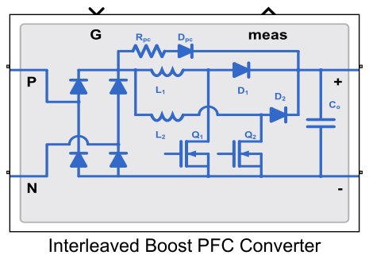
Interleaved Boost PFC Converter
Single-phase diode bridge and two-phase interleaved boost power stage.
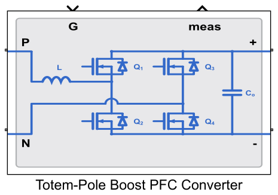
Totem-Pole Boost PFC Converter
Bridgeless totem-pole boost power stage with a fast leg and a slow leg.
Soft-Switching Converters
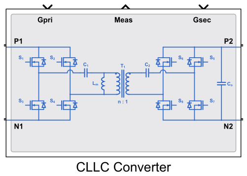
CLLC Converter
Bidirectional CLLC resonant power stage with a full bridge and a resonant capacitor on each side.
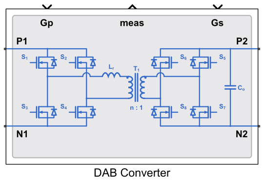
DAB Converter
Dual active bridge power stage with a high-frequency transformer and a series inductor.
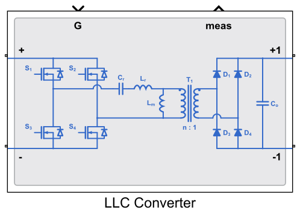
LLC Converter
Full-bridge LLC resonant power stage with a transformer and an output rectifier.
Controller
Inverter-Based Resources
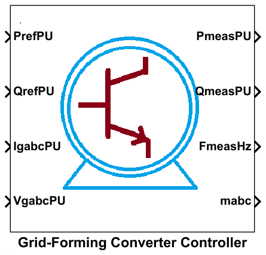
Grid-Forming Converter Controller
Grid-forming converter controller with virtual synchronous machine emulation and fault ride-through.
Non-Isolated DC-DC Converters
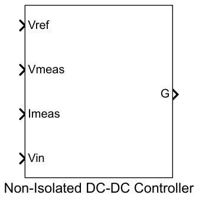
Non-Isolated DC-DC Controller
Cascaded average-current-mode controller covering all six non-isolated DC-DC topologies.
PWM Generators
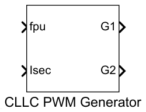
CLLC PWM Generator
Full-bridge gate signals from a commanded switching frequency, plus synchronous rectifier gating.
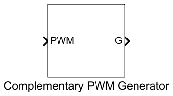
Complementary PWM Generator
One PWM signal split into a complementary gate pair with a dead time.
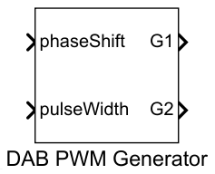
DAB PWM Generator
Gate signals for both bridges of a dual active bridge from a commanded phase shift.
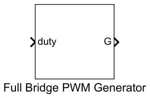
Full Bridge PWM Generator
Full-bridge gate signals with a dead time from a commanded duty cycle.
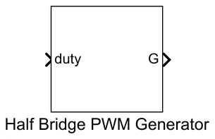
Half Bridge PWM Generator
Half-bridge gate signals with a dead time from a commanded duty cycle.
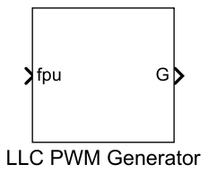
LLC PWM Generator
Full-bridge gate signals with a dead time from a commanded switching frequency.
Power Factor Correction Converters
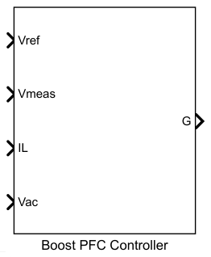
Boost PFC Controller
Average-current-mode controller for the single-leg boost PFC power stage.
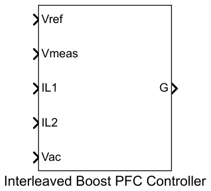
Interleaved Boost PFC Controller
Average-current-mode controller for the interleaved boost PFC power stage, with per-leg current loops.
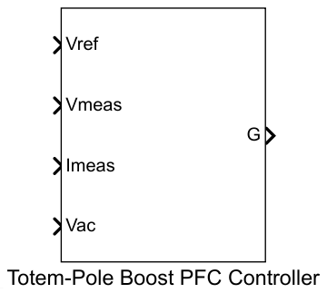
Totem-Pole Boost PFC Controller
Average-current-mode controller for the totem-pole boost PFC power stage, with fast and slow leg gating.
Soft-Switching Converters
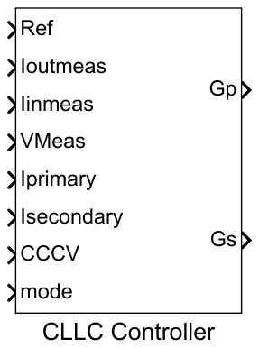
CLLC Controller
Output voltage controller for the CLLC converter, with a 2P2Z or PI compensator in continuous or discrete form.
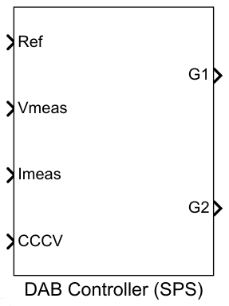
DAB Controller (SPS)
Single-phase-shift controller for the dual active bridge, in constant-current or constant-voltage mode.
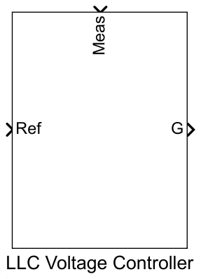
LLC Voltage Controller
Output voltage controller for the LLC converter, with a 2P2Z or PI compensator in continuous or discrete form.
Semiconductor Devices
These blocks are in the Components folder of ConverterLibrary. Each one models a switching device with a thermal port through a Simulink® interface.
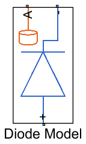
Diode Model
Diode with a thermal port, built with a Simulink interface for simulation performance.
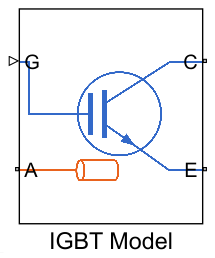
IGBT Model
Ideal switching IGBT with a thermal port, built with a Simulink interface for simulation performance.
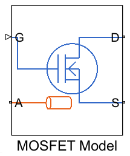
MOSFET Model
Ideal switching MOSFET with a thermal port, built with a Simulink interface for simulation performance.
Analysis Functions
The functions in PowerConverterUtilities simulate a converter model and analyze its waveforms, power loss, efficiency and harmonics. They also select catalog parts and apply them to the plant.
Testing
The Test Framework Documentation describes
the tests for the components and for the design solution of each converter. To run the code
checks, on the toolstrip, click Run Build. To run the tests of one converter, enter its
task name at the command prompt, for example buildtool BoostPFC:AllTest.
Requirements
This project requires:
1. MATLAB®
2. Simulink®
3. Simscape™
4. Simscape Electrical™
5. Stateflow®
6. Control System Toolbox™
Copyright 2025 - 2026 The MathWorks, Inc.